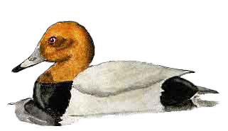

Pochard
A regular winter visitor to Chard reservoir. Numbers have greatly declined in recent years.

1929 - Several visit in the winter months
15/06/30 - Single male
20/03/32 - 45 birds
12/02/36 - 25 birds
27/03/39 - 15 birds
25/03/40 - 6 males
10/04/40 - Pair
17/06/60 - Maximum count of 60 birds
25/01/62 - 22 birds
1965 - 'Small numbers'
27/01/66 - Maximum count of 50 birds
03/11/66 - 2 birds
19/01/67 - 34 birds
10/12/67 - Maximum count of 42 birds
1968 - Maximum count of 54 birds
29/11/69 - Maximum count of 29 birds
??/12/70 - Maximum count of 48 birds
??/02/72 - 42 birds
??/12/72 - Maximum count of 65 birds
??/02/73 - Maximum count of 50 birds
??/12/73 - 34 birds
01/12/74 - Maximum count of 95 birds. Record count to date
??/01/75 - Maximum count of 20 birds
??/01/76 - Maximum count of 37 birds
??/10/76 - 23 birds
??/01/78 - 20 birds
??/12/78 - Maximum count of 80 birds
??/01/79 - 40 birds
??/11/79 - Maximum count of 90 birds
1980 - Up to 35 during both winter periods
18/01/81 - Maximum count of 53 birds
19/12/81 - 36 birds
16/01/82 - 31 birds
30/11/82 - Maximum count of 50 birds
??/02/83 - 12 birds
17/12/83 - Maximum count of 45 birds
1984 - Maximum count of 30 birds during February & March
??/10/84 - 14 birds
17/02/85 - Maximum count of 25 birds
1986 - No count?
25/01/87 - 5+ birds
1988 - No count?
30/06/89 - 3 birds
08/12/90 - Single male
13/12/91 - Maximum count of 22 birds
25/01/92 - 9 birds
10/01/93 - 5 birds
14/12/93 - Maximum count of 14 birds
14/01/94 - Maximum count of 13 birds
10/04/94 - Single bird
24/12/94 - 2 birds
01/02/96 - Maximum count of 23 birds
15/11/96 - 19 birds
27/12/96 - 18 birds
28/01/97 - Single bird
14/12/97 - Maximum count of 12 birds
02/01/98 - 2 males
23/02/98 - Single female
11/10/98 - 4 birds
03/01/99 - 2 males
??/02/99 - 2 birds
25/10/99 - 2 birds
31/10/99 - Maximum count of 11 birds
16/11/99 - 5 birds
03/12/99 - 2 birds
2000 - 9 birds on 24/07.Also a few singles in winter
2001 - Only winter records with max 11 birds on 23/12
2002 - 1 or 2 in winter with 7 on 07/01 and 5 on 11/01
2003 - maximums of 5 on 22/01 and 5 on 15/10. Singles through December with 4 on 05/12
2004 - fewer reports than 2003 with maximums of 3 on 19/01 and 3 on 22/08
2005 - Just one report of a single on 17/12
2006 - Just one report of a single on 05/02
2007 - Just 3 on 18/11
2008 - 1 pair on 02/11, 3 on 07/11 and 1 female on 21/11
2009 - 1 male on 02/01, the only report this year
2010 - Singles on 4 occasions in October and November. 4 on 2/12
2011 - 1 on 10/01 and a pair on 08/02
2012 - 1 female on 28/02 and 1 male on 4 dates in November and December
2013 - 1 male on 23/04. 1 male on 06/12 stayed for 3 days
2014 - No records
2015 - Singles on 05/04, 18/04 and 08/05
2016 - 1 male on 14/04 and 2 birds on 23/10
2017 - 2 on 12/03, 1 male on 30/10, 1 female on 08/11 and 13/11, 1 on 15/11 and 28/11
2019 - 3 on 19/03
2020 - 1 male on 12/11
2021 - No records
2022 - Just one record of 3 males and 1 female on 23/06
2023 - 1 male on 04/11
2024 - 3 records of a single male on 03/11, 27/12 and 30/12
2025 - 3 males on 18/11 (DWH)